Aufgabe 151
Wie groß ist die Fläche A des Parallelogramms?

Wie löse ich Matheaufgaben?
Trigonometrie
Aufgabe 133 Berechnen Sie die Seite b, wenn a = 7,8 cm, c = 9,6 cm und γ = 68°. 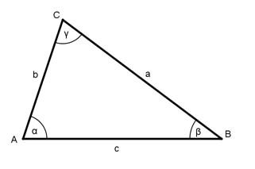
Aufgabe 134 Berechnen Sie die Seite c, wenn b = 2,4 m, α = 43° und β = 64°. c = m
Aufgabe 135 Berechnen Sie die Seite a, wenn b = 62,8 cm, α = 65° und γ = 48°.
Aufgabe 136 Berechnen Sie die Seite b, wenn c = 322,6 m, a = 283,7 m und γ = 48,7°. 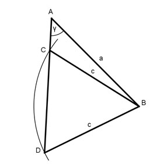 kürzere Seite = m
Aufgabe 137 Berechnen Sie den Winkel α, wenn a = 14,3 m, b = 26 m und γ = 82,1°.
Aufgabe 138 Berechnen Sie die Fläche A des Parallelogramms. A = cm²
Aufgabe 139 Berechnen Sie den Winkel α, wenn a = 27 m, c = 38 m und β = 124°.
Aufgabe 140 Berechnen Sie die Fläche A eines Dreiecks, wenn a = 45 m, b = 296 m und c = 325 m. A = m²
Aufgabe 141 Berechnen Sie den Umkreisradius ra und den Inkreisradius ri eines Dreiecks, wenn a = 32,1 m, b = 13,2 m und c = 39,4 m.
Aufgabe 142 Berechnen Sie die Länge der Diagonalen f, wenn a = 3,9 cm, b = 2,1 cm und α = 47°. f = cm
Aufgabe 143 Berechnen Sie den Winkel γ, wenn b = 4,5 cm, c = 5 cmund hc = 3 cm. 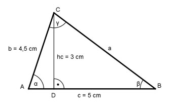
Aufgabe 144 Berechnen Sie die Seite a, wenn ha = 25,3 m, α = 98,8° und β = 34,2°. 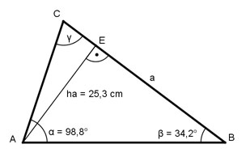 a = cm
Aufgabe 145 Berechnen Sie den Winkel α, wenn a = 55,6 m, c = 66 m und die Seitenhalbierende sc = 32,7 m. 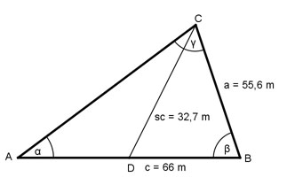
Aufgabe 146 Wie lang ist die kleinere der fehlenden Dreieckseiten, wenn b = 6,25 m, hb = 5,12 m und sb = 5,57 m. 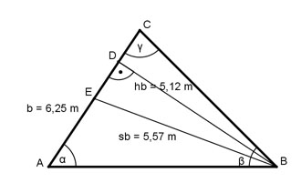 Sie ist m lang.
Aufgabe 147 Berechnen Sie die Seite b, wenn c = 160 m, ha = 91 m und die Winkelhalbierende wβ = 97 m. 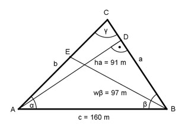
Aufgabe 148 Berechnen Sie die Seite b, wenn hc = 4 cm, wγ = 4,4 cm und sc = 5,3 cm. b = cm
Aufgabe 149 Berechnen Sie den Winkel α, wenn sich die Seiten a, b und c wie 3 : 5 : 7 verhalten.
Aufgabe 150 Berechnen Sie den Winkel β, wenn b = 42,5 m, γ = 85°40' und a und c sich wie 5 : 8 verhalten. β = °
Aufgabe 151 Wie groß ist die Fläche A des Parallelogramms?
Aufgabe 152 Wie groß sind die Fläche A und die Seite b des gleichschenkligen Trapezes? A = m²
Aufgabe 153 Wie groß sind die Diagonalen e und f des Trapezes? 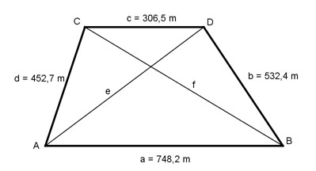
Aufgabe 154 Wie groß sind die Seite c und die Diagonale f des Trapezes? 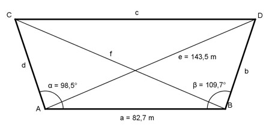 c = m
Aufgabe 155 Wie groß ist die Seite c des Sehnenvierecks? 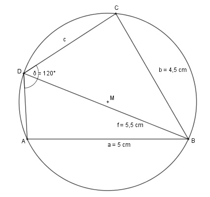
Aufgabe 156 Wie groß ist die Seite d des Sehnenvierecks? 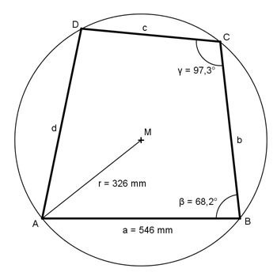 d = mm
Aufgabe 157 Wie groß ist der Winkel δ des Vierecks? 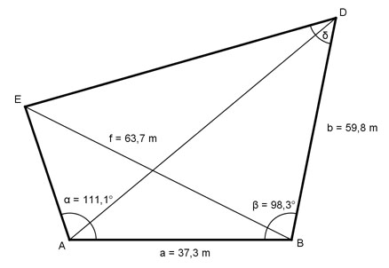
Aufgabe 158 Wie groß ist die Diagonale e des Drachenvierecks? 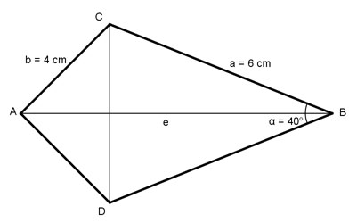 e = cm
Aufgabe 159 Wie groß ist die Diagonale f des Drachenvierecks? 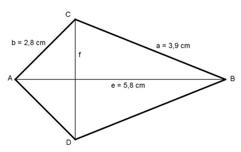
Aufgabe 160 Wie groß ist die Diagonale f des Drachenvierecks? 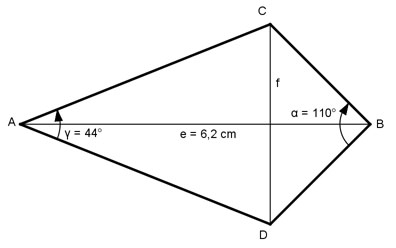 f = cm
Aufgabe 161 Wie groß ist die Seite b des Drachenvierecks? 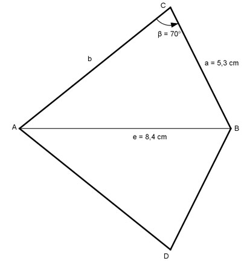
Aufgabe 162 Wie groß ist die Diagonale f des Sehnenvierecks? 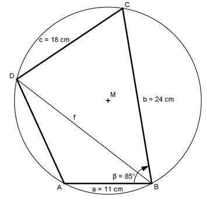 f = cm
Aufgabe 163 Wie groß ist die Diagonale f des Sehnenvierecks?

Aufgabe 164 Die Mittelpunkte zweier Kreise mit den Radien r₁ = 6 cm und r₂ = 4 cm liegen 8 cm auseinander. Wie groß ist die gemeinsame Sehne s? s = cm
Aufgabe 165 Wie groß ist die Seite c des gleichschenkligen Trapezes?
Aufgabe 166 Wie groß ist die Seite a des gleichschenkligen Trapezes? a = cm
Aufgabe 167 Wie groß ist die Seite a des gleichschenkligen Trapezes?
Aufgabe 168 Wie groß ist die Diagonale e des gleichschenkligen Trapezes? e = km
Aufgabe 169 Wie groß sind die Oberfläche O und das Volumen V einer Dreieckspyramide mit 10 cm langen Seitenkanten, wenn die Seiten der Grundfläche a = 5 cm, b = 7 cm und c = 8 cm lang sind? Wie groß ist der Winkel α, den die Seitenkanten mit der Grundfläche bilden? Wie groß ist der Winkel β, den die Grundfläche mit der Seitenfläche über a bildet?
Aufgabe 170 Aus einem Kreisausschnitt mit dem Radius r = 15 cm und dem Mittelpunktswinkel α = 105° ist ein Kegel gebogen worden. Wie groß ist dessen Volumen V? V = cm³
Aufgabe 171 Wie groß sind die Seite c und der Winkel α, wenn a + b = 52 cm, γ = 60° , A = 160 * √3 cm³ und a > b sein soll?

Aufgabe 172 Die Seitenfläche und die Grundfläche einer regelmäßigen geraden dreiseitigen Pyramide verhalten sich wie 2 : 1. Berechnen Sie den Neigungswinkel α einer Seitenfläche gegen die Grundfläche. α = °
Aufgabe 173 Durch die Grundseite a = 4 cm eines geraden regelmäßigen dreiseitigen Prismas verläuft eine Ebene, die um 50,7° geneigt ist. Wie groß ist das Volumen V der abgeschnittenen Pyramide?
Aufgabe 174 Eine gerade regelmäßige fünfseitige Pyramide hat die Grundseite a = 10 cm und Seitenkanten s = 13 cm. Wie groß sind der Winkel α zwischen Grundseite und Seitenkante und der Winkel δ zwischen zwei Seitenflächen? α = °
Aufgabe 175 Ein gerades dreiseitiges Prisma, dessen Höhe > 56 cm ist, hat als Grundfläche ein Dreieck mit den Seiten a = 33 cm, b = 21 cm und c = 45 cm. Eine Ebene, die durch C geht, schneidet die Seitenkante über A in einer Höhe von 28 cm, die über B in einer Höhe von 56 cm. Wie groß sind die größte Seite s dieses Schnittdreiecks und seine Fläche A?
Aufgabe 176 Ein gerades dreiseitiges Prisma hat ein Volumen von 400 cm³. Seine Grundfläche hat die Winkel α = 42,5° und β = 71,3°. Wie groß ist das Volumen V des umschriebenen Zylinders? V = cm³
Aufgabe 177 Ein schiefer Kegel hat eine längste Mantellinie von 30 cm, mit einem Neigungswinkel von 31,2°. Seine kürzeste hat einen Neigungswinkel von 82,4°. Wie groß ist das Volumen V des Kegels?
Aufgabe 178 Einem geraden Kegel mit dem Öffnungswinkel α = 31,6° ist eine Kugel mit dem Durchmesser d = 55,4 cm einbeschrieben. Wie groß ist das Volumen V des Kegels? V = dm³
Aufgabe 179 Berechnen Sie den Winkel α, den eine Raumdiagonale des Quaders mit einer Flächendiagonale und den Schnittwinkel β, den zwei Raumdiagonalen miteinander bilden. 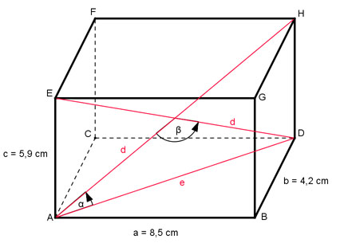
Aufgabe 180 Wie groß ist die Seite d? d = cm
zurück